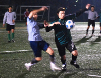

|
Hachioji Park, Saturday 24th October.
As a non-native English speaker I cannot tell you what the word Sala means, but I can tell you that it means "living room" in Portuguese as well as in Spanish. On the pitch however, Sala means trouble. I have played against them about 6 times and every single time, it was a very physical game full of sweet words, specially between Guido and Bevan.
This time was not different, except for the fact that both teams were missing key players. Sala did not have TML's "not just a pretty face" Brooky and Hibs did not have in my opinion TML's best player Super Hitoshi. Hitoshi is the heart of Hibs and having him in goal gives us a lot of confidence. Not this time though, we had to do without him as well as several other key players.
The game started with both teams pushing forward and creating some good chances. Sala seemed a bit more organized in the middle, they passed the ball well and had more possession but lacked that last touch in front of the goal, although they forced stand-in keeper Kouka into a great save bottom left. Even though Hibs struggled in the middle and up front, they were solid again in the back with Jay, Raffa, McKenna and Sheriff Dave. The defenders' great performance motivated the other players and it did not take long for Hibs to find McGirr, if you give the man space to shoot he will make you pay for it, this time he got the ball from a shot that hit the cross bar and luckily for Sala he hit the cross bar again, the ball bounced centimeters away from the goal and went out. No goals for the first half.
In the second half Hibs had Andre up front to fight against Sala's big defenders, but nothing really changed, Sala kept the ball and passed well but Hibs seemed more dangerous up front. The game became even more physical making it a lot harder for the referee to do his job. Sala pushed forward and had a great chance to score with Toby who dribbled past two defenders before being denied a shot from Sheriff Dave at the last minute, that was close!!! Two minutes before the end, when both teams had already accepted their fate for a draw, Hibs had a throw-in on the right side that went to Andre, who tried to turn his Japanese defender, the ball was going past him and he clearly slapped it just like that player's picture on the TML website (right). A clear PK, it took the referee a few seconds to call it causing a lot of anger on the Sala's players, but it was the right call. McGirr calmly stepped up and finished the job, Hibs 1 - Sala 0.
Neither of the teams deserved to lose, everybody played hard but fair, and even though the rainy weather did not help both teams fought hard for the whole game.
Report by Andre Pinto
|